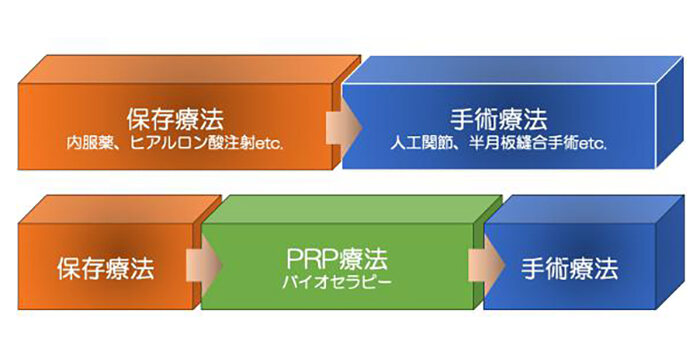
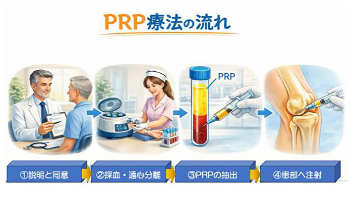
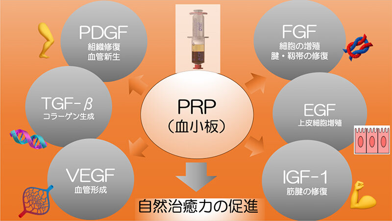

PRPとは？
＜自己修復能力をサポートするPRP＞
切り傷や擦り傷の怪我をした時、血が止まって、固まって、傷が治っていきます。これは血液の中にある“血小板”の働きによります。血小板の中には傷んだ組織を修復する成長因子が含まれており、自己修復の過程が進みます。
この血小板を高濃度に凝縮し活性化させたものが“多血小板血漿”（PRP＝Platelet Rich Plasma）です。
PRP療法について
＜PRP療法の流れ＞
ケガや加齢により傷んだ組織、例えば半月板断裂や変形性膝関節症などに対し、自分の血液から取り出した多血小板血漿（PRP） を患部に投与し、自己修復能力をサポートする治療となります。自分の血液を用いるため重篤な副作用なく利用できることが特徴です。
PRP療法はバイオセラピー（再生医療）の一つで、これまでのような保存療法と手術治療の間をつなぐ第3の治療方法と位置付けられ、“積極的保存療法”と言われています。

＜当院で採用しているPRP＞
炎症を起こしにくくするために、白血球（特に好中球）などの血液成分をほとんど取り除き、純度を高めたACP (Autologous Conditioned Plasma)というPRPを使用します。
＜対象＞
（１）スポーツ外傷に対して（筋肉、腱、靭帯、軟骨の損傷）
スポーツ選手は、１試合でも１秒でも早く治したいと思っています。手術を避けたい、少しでも早く治したいという選手たちに対して行われます。
大会が近いのになかなか治らない選手や、痛みでパフォーマンスが発揮できない選手なども適応になることがあります。
適応症例）半月板損傷、肘内側側副靱帯損傷、腱板断裂、肉離れ、膝蓋腱炎、アキレス腱炎、足関節靭帯損傷、捻挫の後の長引く痛み など。
＜コンビネーション治療について＞
PRP(ACP)療法に、体外衝撃波療法を追加することで、より効果的に、より早期に修復できることが報告されております。
患者さんによりましては、適応になりますので、個別にご相談いたします。
（２）変形性関節症に対して
将来的には手術（人工関節置換術）が必要と分かっていても、今ではなく、それまで痛みを抑えながら手術までの期間を遅らせたい、できれば手術を回避したいという方に対して行います。
適応症例）変形性膝関節症、変形性足関節症 など
＜PRPの種類について＞
変形性関節症の治療の場合、血小板の投与総量が治療成績に反映する報告があるため、PFC-FD™療法もしくは複数回のPRP(ACP)療法をお勧めする場合があります。
＜複数回投与 プレミアムプラン＞
１〜２週おきに3回、PRP(ACP)療法を行うことが推奨されるケースもあります。
この場合、セット価格がありますので、個別にご相談いたします。
＊次にあてはまる方はこの治療をお受けできません
- 抗凝固剤（血をサラサラにする薬）を内服中の方
- 血小板減少症など出血しやすい方
- 極度の貧血の方
- 重篤な感染を有している方
- 易感染性（糖尿病・免疫不全・慢性腎不全・肝硬変など）の方
＜治療の流れ＞
- 外来受診 （保険診療）
①診察、画像診断、機能評価によりPRP(ACP)療法の適応かどうか判断いたします
②PRP(ACP)療法の説明と同意 - PRP(ACP)療法当日（保険適応外自費診療）

①カルテ作成後、同意書の確認
②ACPキットにより血液を採取し、約5分間の遠心分離処理
③PRP(ACP)抽出
④エコーガイド下に正確に患部に注射 - 外来診察（保険診療）
①PRP(ACP)療法の効果を高めるために、数日後から理学療法を行います
②PRP(ACP)療法後は、効果の確認、機能評価のために定期的に外来受診していただきます
＜PRP(ACP)療法後の注意点＞
- 当日は通常に生活していただいて構いません。入浴は控えていただきます（シャワー浴は可能です）
- 数日間は日常生活程度の活動にしていただきます
- 2週程度は軽い運動とし、強度の高い運動は３〜4週以降を予定しております
- スポーツ復帰の時期は患部の状態を見て決めていきます
- ある一定の効果は文献的に報告されておりますが、治療効果には個人差があり、ご満足いかない結果に至らない可能性もあります
＜偶発症・合併症＞
感染
PRP調製にあたっては、細菌などの混入を防止する対策を取っていますが、完全に混入が起こらないとはいえないため、注入後は、注意深く観察を行います。感染の兆候が認められた場合には、抗生剤の投与など適切な処置を行います。
注入の痛み
注入後は必要に応じ、鎮痛剤を服用していただきます。痛みの感じ方には個人差ありますが、痛みは次第に治まります。
注入部位の腫れ
注射後数日は、PRPの代謝が盛んに行われますので、腫れやかゆみ、赤みや痛みが出るなどがありますが、自然に消失していきます。
施術部位の内出血
皮下出血で紫色になることがありますが、次第に治まります。
＜費用＞
PRP(ACP)療法は保険適応外自由診療となります。
スタンダードプラン
50,000円
税込55,000円
1回（１部位）
学生支援プラン
30,000円
税込33,000円
1回（１部位）
プレミアムプラン
120,000円
税込132,000円
3回（１部位）
PRP(ACP)療法３回セット；１〜２週に1回、合計３回行います
PRP(ACP)に高濃度に含まれる組織修復因子（成長因子）

PDGF （Platelet-Derived Growth Factor ; 血小板由来増殖因子）
① 線維芽細胞を増殖させ、腱・靱帯・筋膜のコラーゲン産生増加
② 血管新生を促進し（VEGFを誘導）治癒初期の組織修復
TGF-β (Transforming Growth Factor-β；形質転換増殖因子β)
① 炎症を抑える
② 線維芽細胞を活性化
VEGF （Vascular Endothelial Growth Factor；血管内皮増殖因子）
① 血管新生
FGF （Fibroblast Growth Factor；線維芽細胞増殖因子）
① 線維芽細胞、血管内皮細胞、軟骨細胞など細胞増殖促進
② 腱、靱帯、軟骨の成分となるコラーゲン・プロテオグリカンの産生を促進
EGF （Epidermal Growth Factor；上皮成長因子）
① 上皮細胞増殖し、創傷治癒
② 表層組織の修復
IGF-1（Insulin-Like Growth Factor；インシュリン様成長因子）
① 筋・腱細胞の増殖に働き、コラーゲン合成促進
よくあるご質問
- QPRP療法は1回受けるだけでいいですか？
- A１回投与すれば一生大丈夫というものではありません。１回の投与で、数ヶ月から数年有効であると報告されています。症例によりましては、より高い効果を得るために複数回（３回程度）投与した方が有効との報告もあり、個別にご相談いたします。
- Q半月板損傷の他の治療はありますか？
- A半月板損傷の治療はこれまで、対症療法の痛み止めに加え、理学療法か手術療法のどちらかだけでした。理学療法は基本的には修復を期待しないで、機能を良くするものです。手術療法は一定期間の運動の中止が必要です。このPRP療法は、修復をサポートしながら手術を必要としない新しい選択肢と考えられています。
- Q変形性膝関節症の症例ではどのような人に有効ですか？
- APRP療法は、内服やヒアルロン酸注射による保存療法と、手術療法の間に位置付けられる治療であり、手術には抵抗はあるが痛みなく過ごせる手段があれば、という患者さんの治療の選択肢の一つになります。 変形性膝関節症の患者さんの場合、関節軟骨の減りが酷くない患者さんへの治療は効果が高いと報告されております。重症度が進み変形が強い患者さんの治療成績は限定的と報告されています。
- QPRP療法とのコンビネーションでさらにいい治療はありますか？
- A体外衝撃波治療とのコンビネーション治療の有効性が報告されています。 体外衝撃波治療とは、患部の自由神経終末を減少させ痛みを軽減し、炎症を抑える効果があります。
休診日／木曜午後・土曜午後・日曜・祝祭日 ※受付は午前、午後とも30分前からです。